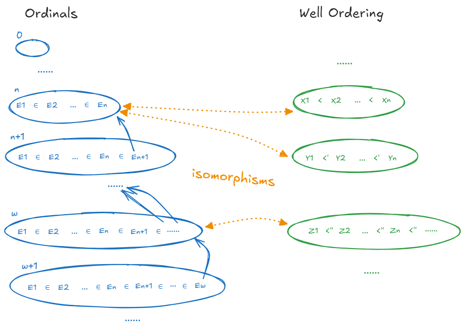
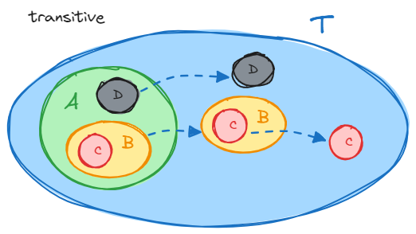

2025-02-11
很自然的一个想法是定义一类（Ord）良序集作为“度量”（序数），使得任意良序集都可以在其中找到一个与之同构的作为“代表”：

首先序的 binary relationship 多种多样，集合论里最现成的是 \(\in\)
其次我们希望“更大”的序数是小一点的序数的拓展，这样做保证两个不同序数总有首段子集关系（\(A\) 是 \(B\) 的首段子集或反过来）， 于是它们是不可能同构的（Lemma 2.7），于是一个良序集最多只能和（唯一）一个序数同构
怎么拓展呢？大序数里新增的元素应当大于（包含）已有首段里的所有元素，不多不少刚好就是之前的某个序数本身 （例如，\(n+1\) 中的新增元素 \(E_{n+1} = n\)；对于极限序数 \(\omega\)，它尾段里新增的无数个元素也是之前的某个序数）
也就是说序数的元素是更小的序数，其本身也会成为更大的序数的元素
所以一个序数不单止其包含的元素需要满足良序集（\(\in\) 之下）的条件，加上其本身也需要满足，因为它将是更大序数的元素
例如传递性：
Definition 2.9. A set \(T\) is transitive if every element of \(T\) is a subset of \(T\)
也就是说如果 \(a \in b \in T\) 则 \(a \in T\)
这会导致 \(T\) 的所有子孙元素都因传递性而成为 \(T\) 的“直接”元素：

所以最终序数的定义是：
Definition 2.10. A set is an ordinal number (an ordinal) if it is transitive and well-ordered by \(\in\)
下面开始也使用 \(\alpha < \beta\) 表示 \(\alpha \in \beta\)
Lemma 2.11.
\(0 = \emptyset\) 是一个序数
如果 \(\alpha\) 是一个序数，而 \(\beta \in \alpha\)，则 \(\beta\) 也是一个序数
由于 \(\beta \in \alpha\) （因 \(\alpha\) 传递性）所以 \(\beta \subset \alpha\)，作为良序集的子集，\(\beta\) 也是一个良序集（其元素满足传递、反自反、连接、良基）
若 \(\delta \in \gamma \in \beta \in \alpha\)（因 \(\alpha\) 传递性）故 \(\delta \in \alpha\)， 于是（因 \(\alpha\) 连接性）要么 \(\delta \in \beta\) 要么 \(\beta \in \delta\)，但后者是不可能的否则违反反自反性，故 \(\delta \in \beta\)， 于是 \(\beta\) 也满足传递性
如果 \(\alpha\) 和 \(\beta\) 是两个不同的序数且 \(\beta \subset \alpha\)，则 \(\beta \in \alpha\)
\(\beta\) 是 \(\alpha\) 的一个前段，因为：
令 \(\gamma\) 是 \(\alpha - \beta\) 中最小的那个元素， 于是对于 \(\alpha\) 中的元素而言 \(\gamma\) 包含（大于）且仅包含（大于）\(\beta\) 中的那些元素， 注意这里是 对于 \(\alpha\) 中的元素而言，但 \(\gamma\) 不可能包含 \(\alpha\) 的元素之外的元素（\(\alpha\) 的传递性），故 \(\gamma = \beta\)
如果 \(\alpha\) 和 \(\beta\) 是两个序数，则要么 \(\alpha \subset \beta\) 要么 \(\beta \subset \alpha\)
令 \(\gamma = \alpha \cap \beta\)，则 \(\gamma\) 也是一个序数：
如果 \(\gamma \neq \alpha\) 且 \(\gamma \neq \beta\)，则由上面 3 则有 \(\gamma \in \alpha\) 和 \(\gamma \in \beta\) 于是 \(\gamma \in \gamma\)，矛盾
故 \(\gamma = \alpha\) 和 \(\gamma = \beta\) 至少有一个要成立，也就是 \(\alpha \subset \beta\) 或 \(\beta \subset \alpha\) 了
额外的如果 \(\alpha \neq \beta\) 那么根据 3，就有 \(\alpha \in \beta\) 或 \(\beta \in \alpha\) 了
(2.1) 所有序数组成的类 Ord 是以 \(<(\in)\) 为线性序的；因为两两不同的序数都有包含关系
(2.2) 每一个序数 \(\alpha\) 都有 \(\alpha = \{\beta: \beta < \alpha\}\)；因为首先 \(\alpha\) 的元素都是比 \(\alpha\) 小的序数， 其次比 \(\alpha\) 小的序数都是 \(\alpha\) 的元素（因为两两不同序数都有包含关系）
(2.3) 若 \(C\) 是非空的序数类（不一定是集合），则 \(\bigcap C\) 也是一个序数，且 \(\bigcap C \in C\) 以及 \(\bigcap C = inf \; C\)
首先 \(\bigcap C\) 是一个集合（因为至少存在一个集合 \(O \in C\)，而 \(\bigcap C \subset O\)，子集公理）
然后类似上面 4 般证明 \(\bigcap C\) 也是序数
现在假设 \(\bigcap C \notin C\)，也就是对于所有 \(C\) 中元素 \(\bigcap C\) 都是它们的 真子集，由上面 3 可得 \(\bigcap C\) 也是它们的 元素， 这就会导致 \(\bigcap C \in \bigcap C\) 而矛盾
所以 \(\bigcap C\) 能直接获得 \(C\) 里最小的那个序数
(2.4) 若 \(X\) 是非空的序数集合，则 \(\bigcup X\) 也是一个序数，且 \(\bigcup X = sup \; X\)
首先由于序数的元素都是序数，所以 \(\bigcup X\) 的元素都是序数，于是它是线性序的（2.1）
对于任意 \(\bigcup X\) 的子集 \(C\)，由（2.3）可知存在\(\bigcap C\) 这个最小元素，所以 \(\bigcup X\) 是良基的
最后对于任意 \(x \in \bigcup X\)，存在某个序数 \(O \in X\) 使得 \(x \in O\)，于是 \(x \subset O\) 于是 \(x \subset \bigcup X\)，所以 \(\bigcup X\) 满足传递性
(2.5) 对于任意序数 \(\alpha\)，\(\alpha \cup \{ \alpha \}\) 也是序数，且 \(\alpha \cup \{ \alpha \} = inf \; \{ \beta: \beta > \alpha \}\)， 定义 \(\alpha + 1 = \alpha \cup \{ \alpha \}\)